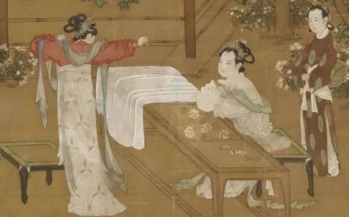
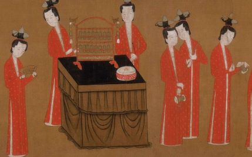

宋朝女子服饰具有重要的社会和文化意义，在当时的社会中扮演着不可忽视的角色。宋朝女子的服饰设计注重细节和精致，体现了他们对美的追求和优雅的生活态度。通过研究宋朝女子服饰图案与色彩，我们可以深入了解宋代社会的审美观念、文化传统以及时尚趋势的演变。宋朝女子服饰图案与色彩的研究，对于揭示宋代社会文化的多样性和独特性具有重要意义。

文化艺术与服饰风格的融合
宋朝时期的女子服饰受到了许多历史因素的影响。在政治层面上，北宋时期的政权极力倡导儒家思想，提倡礼仪和庄重。因此，女子服饰在这个时期呈现出相对保守和克制的特点。与此同时，在经济发展和对外交流的推动下，来自中亚和西亚的影响也逐渐融入了女子服饰的设计中，使得服饰呈现更加细致且多样化的特征。
宋朝女子服饰的文化意义在于展示女性社会地位和家庭身份。根据女子不同的身份和阶层，服饰的款式和层次有所区别。无论是贵族阶级的妇女还是普通百姓的女子，她们通过服饰的细节和装饰来彰显自己的社会地位和家族背景。如花朵、动物等的图案，以及珠宝、头饰等的使用，都传达了女性高贵、典雅和温柔的形象。
宋朝女子服饰的图案设计
宋朝女子服饰的图案设计充分体现了其时代的审美理念和文化特色。宋朝女子服饰图案色彩的使用与搭配，以柔和、含蓄的风格为主，强调了雅致和细腻之美。
在宋朝女子服饰的图案设计中，常见的有花卉、云纹、山水、凤凰等元素。这些图案以简洁而独特的线条勾勒出自然界的美丽景色，并融入了中国传统文化的意象。花卉常被用来表达女子柔美的形象，不仅体现了女性的艳丽与娇媚，也象征着吉祥和富有。除了图案的选择，宋朝女子服饰还注重搭配的精致和细节的处理。在服装的剪裁和装饰上，追求简约而精致，注重细节的雕琢和刺绣等手工艺技巧。这些细节的处理使得服饰更加高雅和优雅。

宋朝女子服饰的色彩特征
首先，丰富而柔和的色调。宋朝女子服饰常采用以素雅、雅致为主的色调，其基本色彩包括浅淡的粉白、玫瑰红、胭脂红、嫩绿、青色等。这些色彩给人以温婉、清丽的感受，与宋朝追求文人雅士风范相契合。其次，色彩的组合与对比。宋朝女子服饰注重色彩的搭配与对比，常采用相近色和互补色相结合的方式，营造出明暗、冷暖对比之美。这种色彩组合使得服饰更加生动有趣，展现了宋朝时期独特的审美情趣。在宋朝，服饰的色彩还与人们的社会地位密切相关。高阶妇人及官员家眷常穿着鲜艳、富丽堂皇的服饰，色彩饱满且品种繁多；而普通庶民则以素雅、淡雅的色调为主。这种色彩差异不仅凸显了社会等级的差别，也反映了服饰在社会交往中的象征作用。
色彩与图案的和谐搭配
首先，在图案的选择上，宋朝女子服饰常常选取自然风景、花卉植物、山水等元素作为图案样式。这些图案精致细腻，富有艺术性，能够表现出人们对大自然的向往和赞美。其次，在色彩的运用上，宋朝女子服饰注重的是色彩的和谐与平衡。常用的色彩有红、黄、蓝、绿等，其中红色是最为常见和突出的颜色。红色寓意喜庆和吉祥，也是当时社会上地位高贵人士的象征色彩。除了红色，黄色也是宋朝女子服饰中常用的颜色，寓意着富贵和尊贵。此外，蓝色和绿色则常常被用来表达自然界的美好和宁静。这些色彩不仅在服饰本身的选择上有所体现，还通过配饰和装饰品的使用来丰富整体效果。